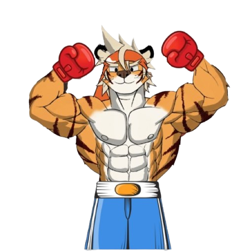
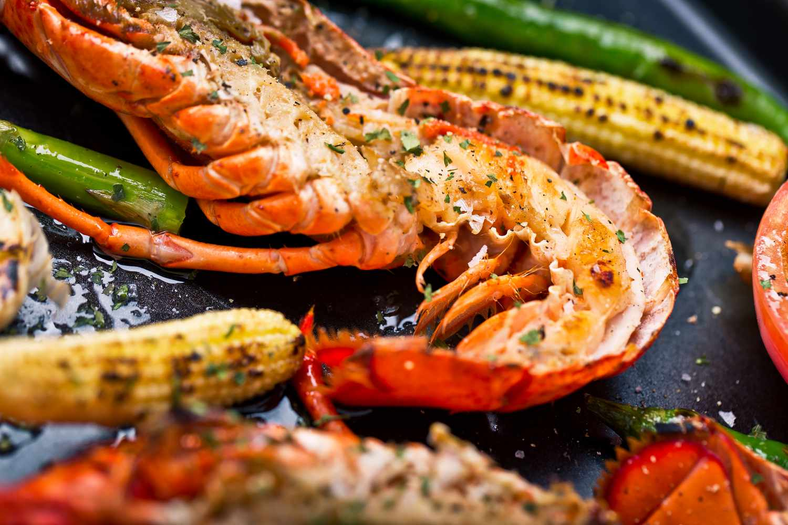
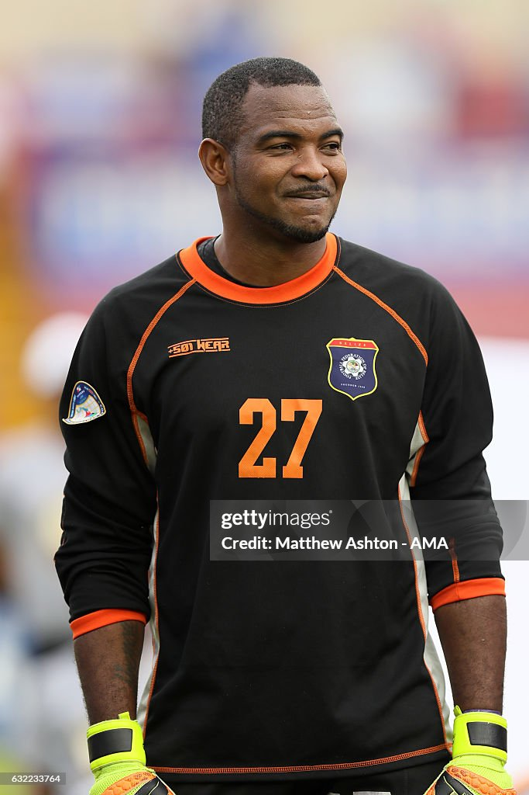
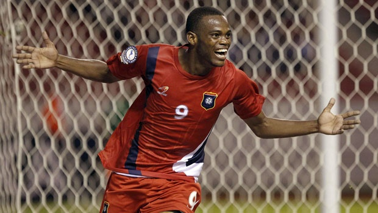

Este es el logo/mascota beliceña para los Juegos Olímpicos
Acerca de Belice como Anfitrión de los Juegos Olímpicos
Belice puede albergar los Juegos Olímpicos asociándose con empresas y consiguiendo financiación de patrocinadores internacionales. Belice podría asociarse con Estados Unidos y sus empresas deportivas como Sketchers. Empresas turísticas, hoteles y aerolíneas como Hilton Hotels y American Airlines.
Historia Olímpica de Belice
- 1968
- 1972
- 1976
- 1980
- 1984
- 1988
- 1992
- 1996
- 2000
- 2004
- 2008
- 2012
- 2016
- 2020
- 2024
Gastronomía Beliceña
Belice es conocido por sus mariscos frescos, la langosta a la parrilla es un plato local allí. Los turistas pueden comer y disfrutar de esta comida a lo largo de la costa; la langosta se prepara principalmente con especias locales y se sirve con acompañamientos como arroz y diversas verduras.
Un plato beliceño. Este plato lleva arroz y frijoles cocidos en leche de coco, servidos con pollo guisado. La mezcla de especias y coco le da un sabor único.

¿Por qué organizar los Juegos Olímpicos en Belice?
- Buen clima
- Hermosa naturaleza, paisaje y playas
- Fácil de moverse por el país
- Riqueza en cultura
- Ayuda a Belice a convertirse en un país turístico y les ayuda económicamente.
- Crea un momento histórico en Belice y anima a las personas a mejorar en el deporte
- Esta experiencia tendría un impacto positivo en el país y crearía momentos memorables para los involucrados
- Debido a que el costo de vida es bastante bajo, esto significa que los turistas no tendrán que gastar tanto dinero.
- Cultura gastronómica
Shane Orio
Exfutbolista beliceño
Edad: 43
Posición: Portero
Lo que ha logrado:
Se convirtió en el portero titular de la selección nacional de Belice.
Participó en las eliminatorias para el Mundial.
Deon McCauleyr
Exfutbolista beliceño
Edad: 36
Lo que ha logrado:
Anotó el primer gol y el primer hat-trick de la campaña de clasificación para la Copa Mundial de la FIFA 2014.
Máximo goleador de Belice
18 goles en la clasificación para la Copa Mundial de la FIFA y 2 goles en la Copa de Naciones UNCAF 2007.
